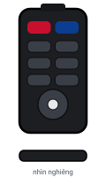
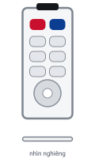
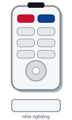

Máy chiếu gặp sự cố? Tự kiểm tra 3–5 phút trước khi gọi kỹ thuật.
Máy chiếu treo trên cao, thầy cô chỉ cần thao tác trên remote, đầu cáp HDMI ở bàn giảng viên và laptop. Làm theo 4 bước dưới đây.
Quy trình khi vào lớp
-
Đến phòng Lấy remote trên bàn giảng viên. Nhìn xem đầu cáp HDMI trên bàn còn nguyên, không gãy lỏng.
-
Bật máy chiếu Chĩa remote lên máy chiếu, nhấn Power 1 lần. Đợi 30–60 giây cho đèn báo chuyển xanh.
-
Cắm HDMI vào laptop Trên remote nhấn Input / Source → HDMI. Windows: Win + P → Duplicate. macOS: Mirror. Chi tiết →
-
Gặp sự cố? Gõ số phòng hoặc chọn loại máy chiếu bên dưới để xem danh sách sự cố và tự kiểm tra trước khi gọi IT.
Gõ số phòng để biết máy chiếu trong phòng
Danh sách phòng theo biên bản kiểm tra máy chiếu ngày 11/07. Thiếu hoặc sai phòng? Báo IT để cập nhật.
Hoặc chọn theo loại máy chiếu
Không rõ hãng? Nhìn vào remote: màu đen là Hitachi, màu trắng mỏng dẹp là Sony, màu trắng dày là Infoto. Các model cùng hãng dùng giống nhau.
-

Hitachi Remote màu đen 9 phòng: 404C2, P1E3, P2E6, 106E7, 203E7, 204E7, 205E7, 206E7, P1E9 Xem danh sách sự cố → -

Sony Remote màu trắng, mỏng dẹp 16 phòng: 103C2, 202C2, 304C2, 501C2, 502C2, 504C2, P2E4, P3E4, P1E5, P2E5, P4E5, P1E6, P3E6, P4E6, 202E7, P4E9 Xem danh sách sự cố → -

Infoto Remote màu trắng, dày 24 phòng: 201C2, 203C2, 301C2, 302C2, 303C2, 401C2, 402C2, 403C2, P3E3, P4E3, 201ĐN, 202ĐN, 203ĐN, 204ĐN, 301ĐN, 302ĐN, 304ĐN, 401ĐN, 402ĐN, 403ĐN, 404ĐN, 501ĐN, 502ĐN, 504ĐN Xem danh sách sự cố → -
 Hãng khác
NEC · Epson · ViewSonic · Eiki – cách dùng tương tự, nút có thể khác tên
9 phòng: 101C2, 104C2, 503C2, P2E3, P1E4, P3E5, 303ĐN, 503ĐN, P3E9
Xem danh sách sự cố →
Hãng khác
NEC · Epson · ViewSonic · Eiki – cách dùng tương tự, nút có thể khác tên
9 phòng: 101C2, 104C2, 503C2, P2E3, P1E4, P3E5, 303ĐN, 503ĐN, P3E9
Xem danh sách sự cố →
Vẫn không xác định được? Xem danh sách sự cố chung →
Sơ đồ remote và đèn báo từng hãng: Hitachi · Sony · Infoto
- Có mùi khét, khói, tia lửa hoặc tiếng nổ nhỏ từ máy chiếu.
- Máy chiếu bị rơi, va đập, giá treo lung lay, dây điện hở.
- Đèn báo đỏ sáng liên tục hoặc nhấp nháy mà máy không lên hình.
- Đã thử theo hướng dẫn 3–5 phút mà không được.
📞 Đã tự kiểm tra mà chưa được? Liên hệ IT
Gọi IT: [SỐ ĐIỆN THOẠI IT]Khi gọi, hãy nói rõ: phòng – hãng máy – sự cố – đã thử gì. Dùng mẫu báo sự cố có sẵn →